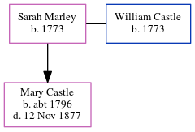

Sarah Castle (née Marley) 1773 -
[ Home ] | [ Calendar ] | [ Surnames Index ] | [ Errors ] | [ Family History ]Sarah Marley, the 4 times great-grandmother of Nigel Horne, was born in Mongeham, Kent, England in 17731,2,3 and married William Castle (with whom she had 1 child, Mary) at St Margaret's Church, Womenswold, Kent, England on 15 Oct 17934.
During her life, she was living in Eastry, Kent, England in 18511; and in Tilmanstone, Kent, England in 18612.
Children
- Mary was born c. 1796
Citations
- 1851 England Census Online publication - Provo, UT, USA: The Generations Network, Inc., 2005.Original data - Census Returns of England and Wales, 1851. Kew, Surrey, England: The National Archives of the UK (TNA): Public Record Office (PRO), 1851. Data imaged from the National
- 1861 England Census Online publication - Provo, UT, USA: The Generations Network, Inc., 2005.Original data - Census Returns of England and Wales, 1861. Kew, Surrey, England: The National Archives of the UK (TNA): Public Record Office (PRO), 1861. Data imaged from the National
- Public Member Trees Online publication - Provo, UT, USA: The Generations Network, Inc., 2006.Original data - Family trees submitted by Ancestry members.Original data: Family trees submitted by Ancestry members.
- Pallot's Marriage Index for England: 1780 - 1837 Online publication - Provo, UT, USA: The Generations Network, Inc., 2001.Original data - The original paper slip index, from which this database was created, is owned by The Institute of Heraldic and Genealogical Studies, Canterbury, England.Original data:
Notes
familysearch.org person AFN: 1K9R-08X.
Family Tree
Map
Generated by ged2site. Last updated on Jul 3, 2024
Known Issues
Listed in the residence for 1851, but spouse William Castle is not
Listed in the residence for 1861, but spouse William Castle is not